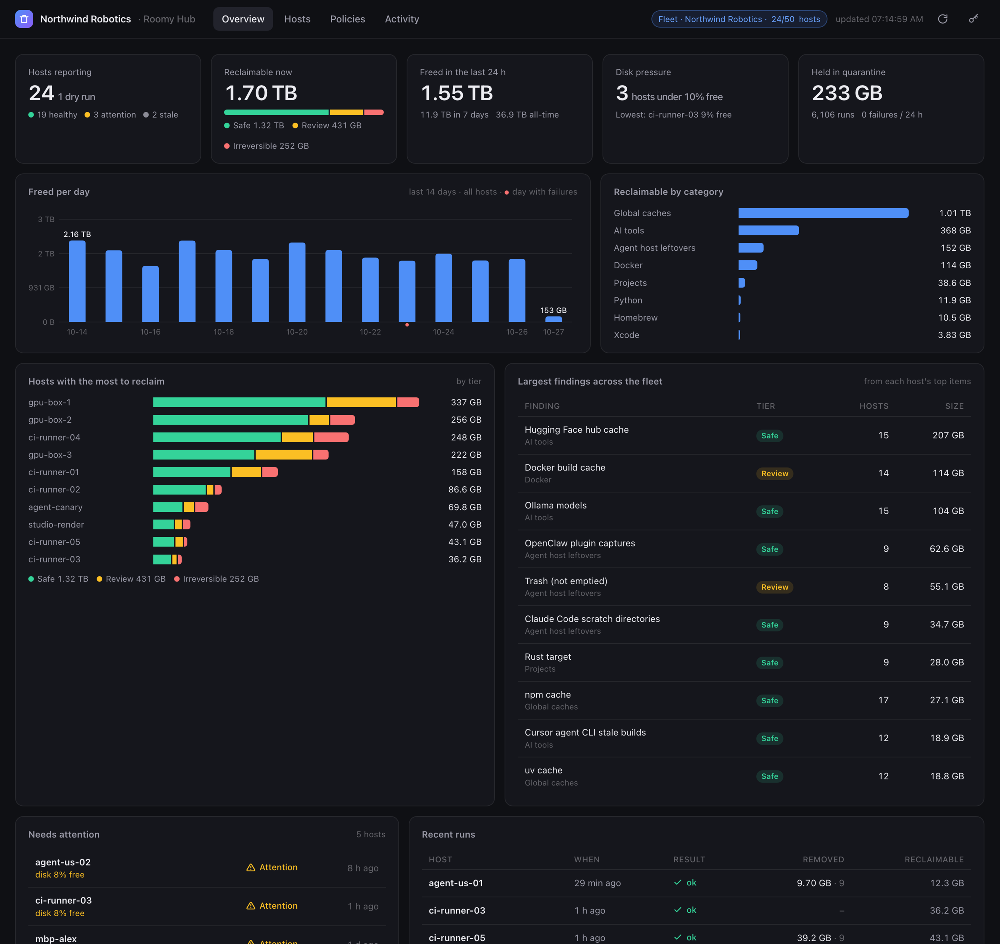
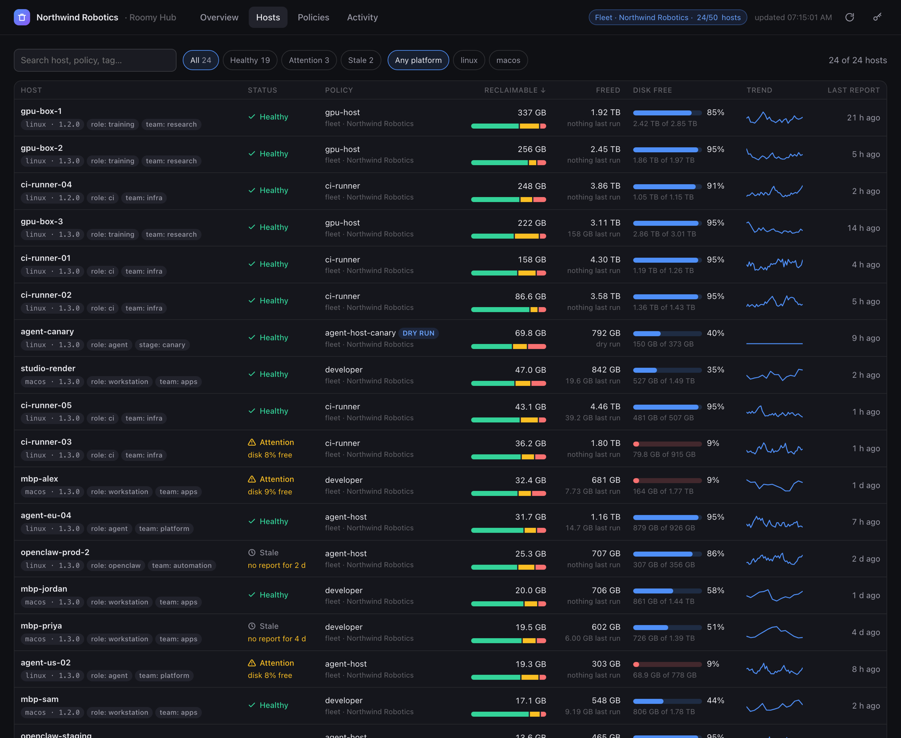
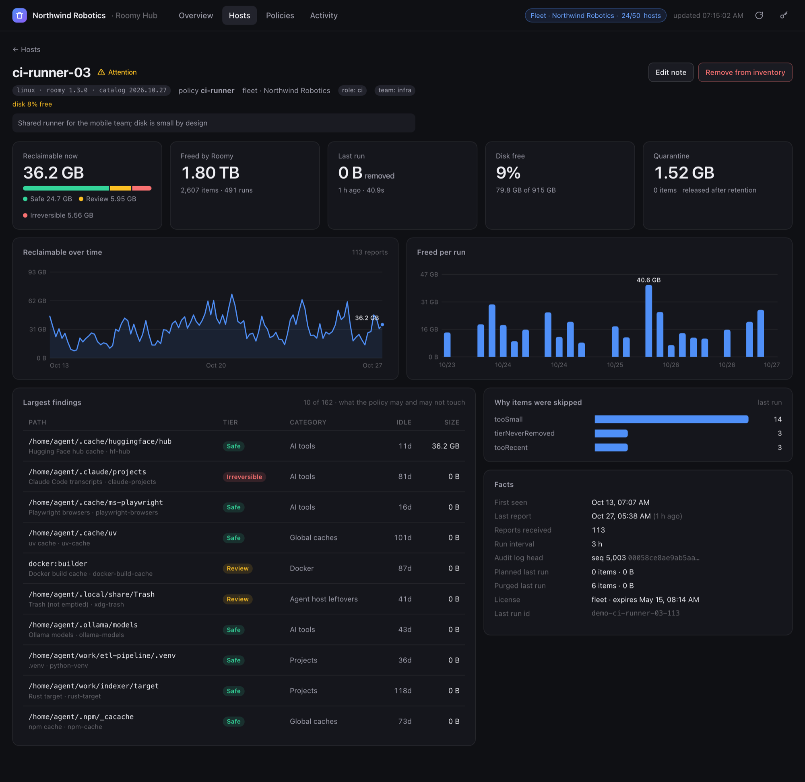
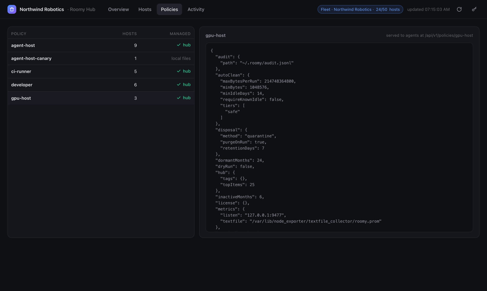

Roomy Fleet + Roomy Hub · for teams running agents on many machines
Every agent host. One screen.
Agents fill disks on machines nobody is watching: CI runners, GPU boxes, OpenClaw hosts, the laptops of a whole team. Roomy Fleet cleans them up by policy, with quarantine and an audit trail. Roomy Hub shows the whole fleet: what is reclaimable, what was freed, which host is about to fill up, and what each policy is allowed to touch.

Built like the monitoring you already run
No agent framework, no database, no cloud. Hosts run a policy on a timer and post a few kilobytes to a hub you host. Everything is plain files and plain HTTP.

Know which host is about to fill up before it does
Every host is healthy, needs attention, or has gone quiet, and the hub says why: disposal failures, under 10% free, over the license allowance, no report for two days. Search by name, policy or tag; sort by what matters right now.
- Reclaimable bytes split into Safe, Review and Irreversible per host, with a trend line
- Disk free as a meter that turns red under 10%, with the exact free and total bytes
- Tags from the policy (role, team, region) for grouping, and the Roomy version per host for rollouts
- Staleness from each host's own run interval, so a quiet daily host is not a false alarm
Every host, every finding, and what the policy may touch
The host page shows the largest findings with their safety tier and idle time, including the Irreversible ones the policy will never remove, so you can see at a glance why 222 GB is reported but only 126 GB can go.
- Reclaimable over time and freed per run, from the host's own report history
- Why items were skipped: too recent, too small, tier never removed, over budget
- The audit log's sequence number and chain head, so a reset or edited log stands out
- An operator note per host, and removal from the inventory when a machine is retired


One policy, pushed to every host
A policy is a JSON file: which safety tiers may be removed unattended, how idle an item must be, a byte budget per run, paths that are never touched, quarantine retention. Push it to the hub once; hosts pull it before every run.
- Safe tier only by default. Irreversible items are never removed by a policy, on any host
- Quarantine first: removed items sit on the same volume for a retention period and can be restored
- If the hub is unreachable, a host runs its local policy and says so; an outage never stops cleanup
- Validated on push, so a typo in a tier name is caught before it reaches a machine
Prometheus metrics, an audit log you can hand to security
Every host exposes its own metrics; the hub exposes the fleet. Every removal is one JSON line in an append-only log where each record hashes the previous one, so a truncated or edited log fails verification.
- Per-host series with host and policy labels; fleet series for hosts by status, reclaimable by tier, freed in the last 24 h, hosts under disk pressure
- A JSON API for everything the dashboard shows, and a CLI that uses it: roomy hub status
- systemd units and a container image; state is plain files you back up with rsync
Up in three steps
Packages for Debian, Ubuntu, RHEL and Alpine, a container image, and Homebrew on macOS. The hub needs one small VM or container.
Run the hub
Anywhere your hosts can reach. Two tokens: one for agents, one for you.
sudo apt install ./roomy_1.3.0_amd64.deb roomy hub token | sudo tee /etc/roomy/hub.agent.token roomy hub token | sudo tee /etc/roomy/hub.admin.token sudo systemctl enable --now roomy-hub
Point each host at it
One policy file per host. Start in dry-run, read what it would remove, then switch it on.
sudo roomy fleet policy init --profile agent-host \ --hub http://hub.internal:9478 --tag role=agent \ --output /etc/roomy/policy.json sudo systemctl enable --now roomy-fleet@agent.timer
Open the dashboard
Or try it first with a synthetic fleet, no hosts required.
open http://hub.internal:9478/ # a look before you install anything: roomy hub demo && roomy hub serve \ --data-dir ~/.roomy/hub-demo
Full references: policy file, runs, systemd, metrics, audit log · hub, tokens, API, managed policies · CLI · source on GitHub
Free on every host. Pay for the fleet.
The CLI and the per-host fleet runner are free, on as many machines as you like. The license is for operating a fleet from one place, with someone to call.
Community
- Mac app and roomy CLI for macOS and Linux
- Policy runs, quarantine, audit log and Prometheus metrics on every host
- Roomy Hub with up to 5 hosts in the inventory
- Offline, no account, no telemetry
Fleet
- Hub inventory up to your licensed host count, organisation shown in audit records and metrics
- Centrally managed policies, fleet-wide metrics, operator notes, event log
- Commercial support with a named contact and a security channel
- Offline license token, no phone-home, works air-gapped
Questions
What does a host send to the hub?
A few kilobytes after each run: host name, platform, version, policy name, tags, reclaimable bytes by tier and category, what the policy selected and removed, cumulative totals, quarantine size, disk space, the audit chain head, and the largest findings with their paths. Never file contents.
Does anything leave my network?
No. The hub is a service you run. Roomy has no cloud component and no telemetry. The license is verified offline against a key compiled into the binary.
What happens when the hub is down?
Hosts keep running their local policy, log that the report failed, and record it in the audit log. A hub outage never stops a cleanup run, and never makes one more aggressive.
How is the hub secured?
Two bearer tokens. Agents can only post reports and fetch policies; the admin token reads the inventory, the API and metrics, and pushes policies. The hub speaks plain HTTP; run it on a private network or behind your reverse proxy with TLS, like node_exporter.
Can it remove something it should not?
A policy can only remove the tiers it names, and Irreversible items (session transcripts, archives, volumes) are never removed by policy on any host. Removal goes to quarantine first, on the same volume, and roomy restore brings an item back. Read the Fleet reference for the full safety model.
Is there a hosted version?
Not yet. Today the hub is self-hosted: one binary, plain files on disk, a systemd unit or a container. A hosted option is on the roadmap. The screenshots on this page are from the built-in demo fleet, not a customer.